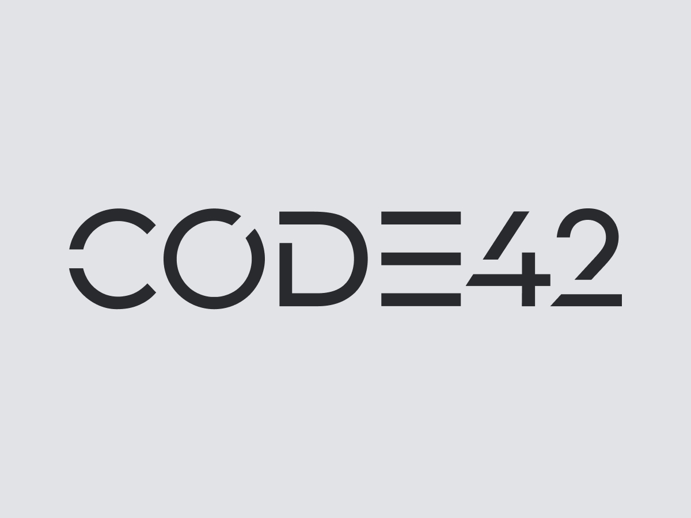
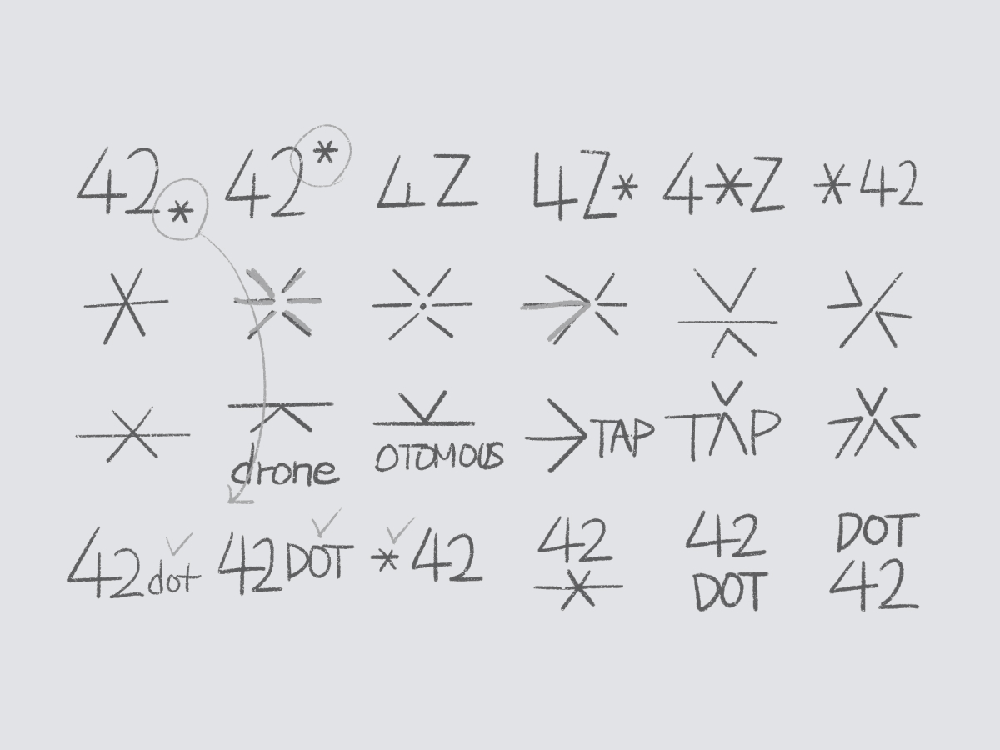
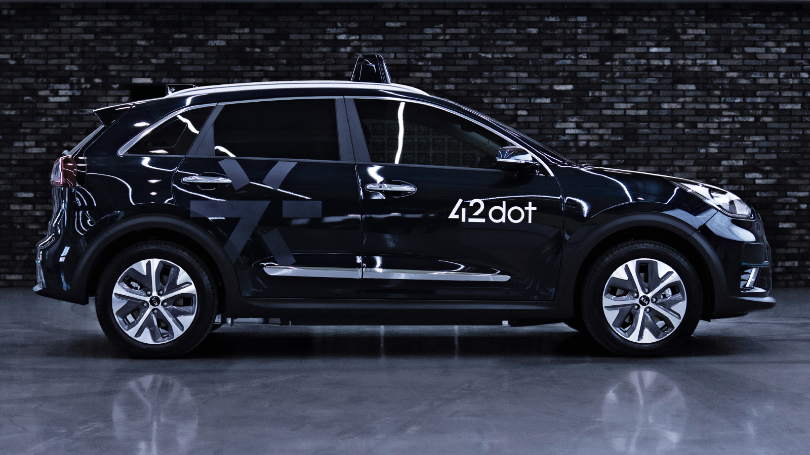
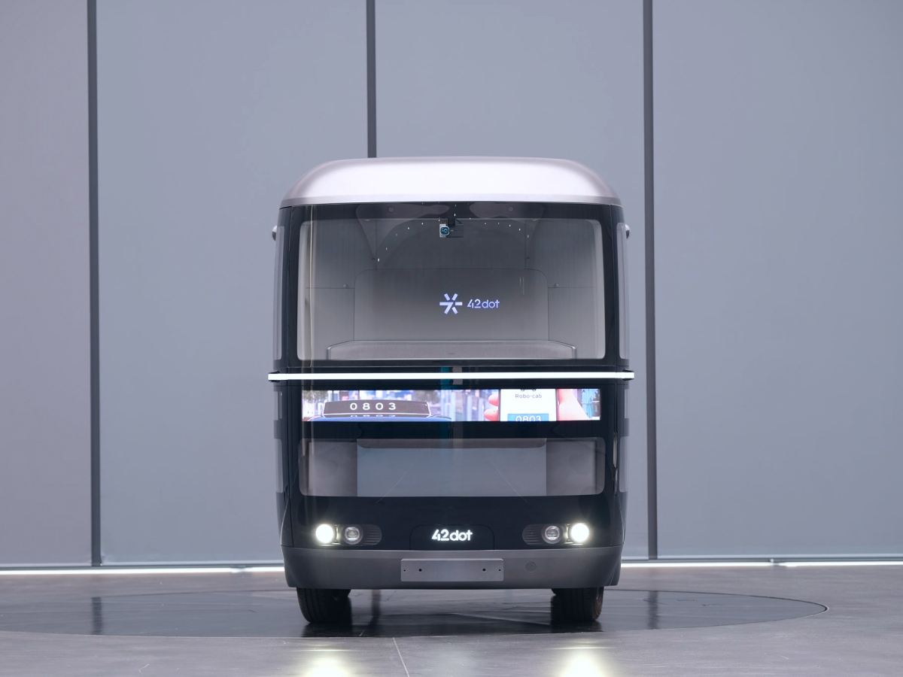
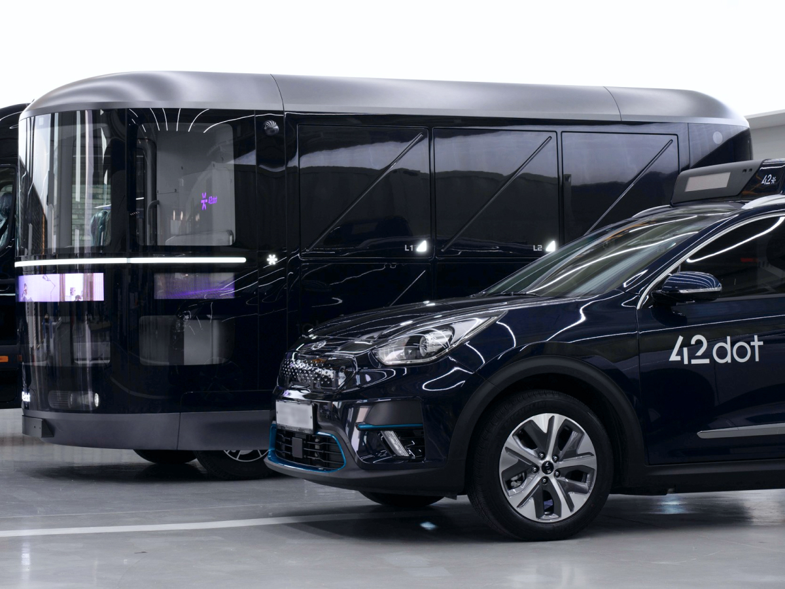
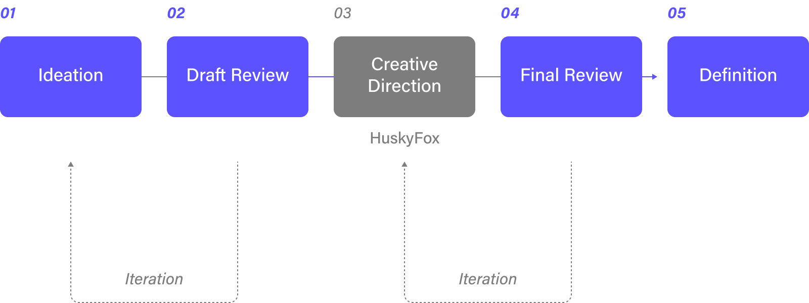

포티투닷은 자율주행 기술을 연구하는 스타트업으로 주요 투자사인 현대기아자동차의 투자로 설립되었으며 시간과 공간의 한계를 뛰어넘어
모든 교통수단과 공간을 매끄럽게 연결해 주는 서비스를 만들어 우리의 삶을 더욱 빠르고 편리하게 만들어주는 혁신기술을 만듭니다.
포티투닷의 미래 모빌리티 산업의 비전과 가치를 기업 정체성에 접목시키고 고객들에게 새로운 경험을 제공하도록 브랜딩을 진행했습니다.
브랜드 리뉴얼 전체 과정에서 다양한 아이디어를 함께 제안하고 구체화했으며 협력업체의 결과물에 대한 품질 관리를 진행했습니다.
Company42dot
CooperationHuskyFox
MembersPO · BX designer · Space designer · UI designer
국내 최대 자율주행 스타트업인 만큼 차별화된 비전과 독창적인 아이덴티티를 제공할 수 있는 브랜드 가이드라인이 필요했습니다.
'Code42(코드42)'로 시작해 본격적인 Team Set-up과 함께 새로운 비전과 강화된 브랜드아이덴티티를 포함하는
'42dot(포티투닷)' 사명으로 개편되었고 이에 따라 확장성 있는 브랜드 이미지와 비전을 제공하도록 브랜드 리뉴얼 프로젝트를 진행했습니다.

Legacy

Ideation
Brand Logo & Symbol
포티투닷의 로고는 ‘Autonomous & Friction-less’를 지향하는 회사의 신념과 비전을 시각화하여 만들어졌습니다. 포티투닷은 아스키코드 내 42가
뜻하는 연결과 무한한 확장 그리고 애스터리스크(*)를 dot으로 표현해 조합되었습니다. 로고에는 자율 주행으로서의 서비스를 가속화한다는 기업의 비전과
미션이 담겨 있으며 기업의 정체성을 표현하고 동시에 브랜드 이미지를 강화합니다.
포티투닷 브랜드 로고에 대한 심미적인 완성도를 고도화시키고 아이덴티티를 강화한 작업은 협업을 진행한 디자인 에이전시 HuskyFox와 함께 진행한 내용이며
해당 회사 홈페이지에서 제작과정, 히스토리를 자세하게 확인할 수 있습니다.
새롭게 리뉴얼된 브랜드 로고와 심벌은 포티투닷의 기술력이 집약된 다양한 장치에 적용되어 고도화된 기술력과 새로운 모빌리티를 그리는
회사 비전을 제시합니다. 브랜드의 이미지를 넘어 기능적인 장치로 사용될 수 있도록 차량, 장치, 시스템의 곳곳에서 활용되었습니다.



Design Process
Ideation
초기 방향 설정 과정에서 기존 CI의 개선 지점을 발굴하고 신규 브랜드 이미지와 커뮤니케이션 방향성을 고민했습니다.
Review
내부 리뷰를 거쳐 정리된 콘셉트를 구체화해 협력사로 전달했습니다. 이후 초기 콘셉트에서 파생된 다양한 아이디어와 결과물을 검토했습니다.
Definition
브랜드 가이드 초안을 토대로 내부 리뷰를 거쳐 요구 사항을 반영하고 방향성을 일부 개선해 자사 제품에 적용 가능하도록 가공했습니다.

What I Learned
Storytelling
브랜드 리뉴얼 프로젝트에 참여하며 심미적인 완성도와 함께 브랜드 아이덴티티를 강화하는 스토리텔링을 했습니다. 스토리텔링을 통해
디자인 방향성을 정의하고 하나의 아이덴티티에서 파생되는 브랜드 이미지들에 일관성이 더해져 높은 완성도로 연결되는 경험을 할 수 있었습니다.
Quality control
리뉴얼 프로젝트를 협력사와 함께 진행하며 의사 결정권자의 피드백이 효과적으로 반영될 수 있도록 커뮤니케이션했습니다. 협업 디자이너들의 다채로운
아이디어들을 검토하고 브랜드의 방향성과 맞는 결과물을 발전시키는 경험을 통해 조금이나마 디자인 품질 관리 경험을 할 수 있었습니다.
Epilogue
브랜드가 시작되는 단계에서 참여하고 브랜드의 비전과 방향성을 고민해 볼 수 있었습니다. 일관된 디자인으로 심미적인
브랜드 아이덴티티를 강화하고 온라인, 오프라인 환경에서의 브랜드 커뮤니케이션 경험을 쌓을 수 있었습니다.
Company42dot
CooperationHuskyFox
MembersPO · BX designer · Space designer · UI designer